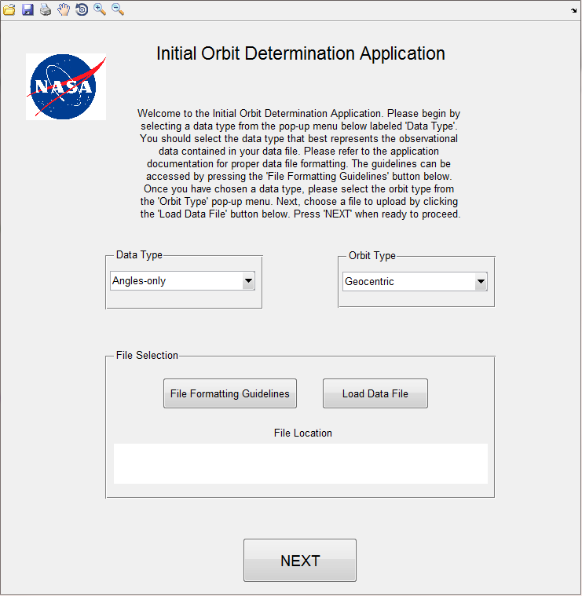
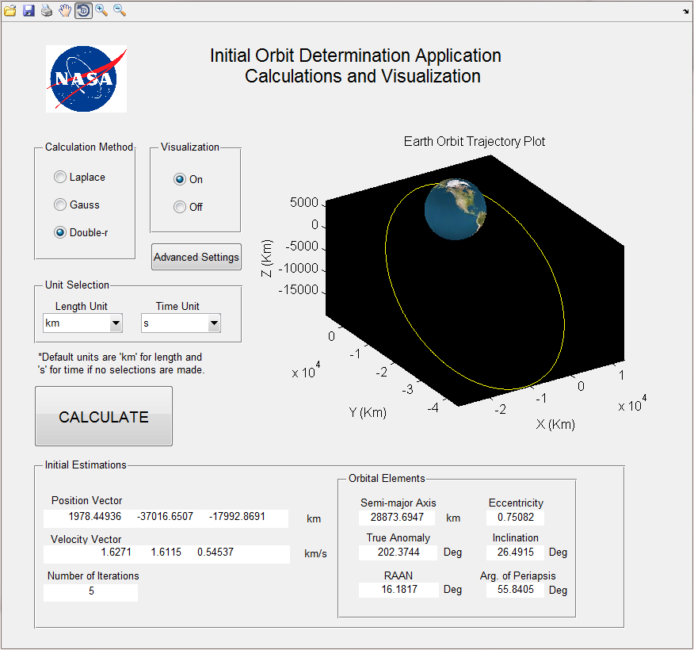
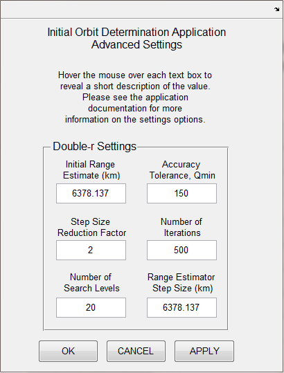

The Initial Orbit Determination (IOD) Application is an initial orbit determination tool based in Matlab that provides an easy way to estimate and compare orbits using different IOD methods. Its primary purpose is to provide an initial orbit estimate of a satellite, asteroid or other orbiting body for a differential correction algorithm that can refine the estimate. The IOD Application utilizes three angles-only IOD techniques: Laplace, Gauss, and Double-r.
The IOD Application provides two methods of use. One method is through a graphical user interface (GUI) that offers an orbit visualization tool as well as advanced options such as setting accuracy tolerances and the number of allowed iterations for the Double-r method. The GUI does not allow for the output of variables into the workspace or another program. In order to have values output to the workspace or to another program, the program user interface will need to be used. This can be accessed via the function IODMain and is discussed below in the Interface and Directions section below.
The IOD Application’s main feature is its ability to quickly determine an initial orbit estimate for geocentric or heliocentric orbits given angles-only observations. With these observations stored in a data file that follows the file-formatting guidelines outlined in the File Formatting section below, it is quite simple to use any of the three IOD methods contained in this package. The GUI provides a simple way to compare the three IOD methods as well as visualize an estimated orbit.
The IOD Application also has the ability to provide covariance information for the estimated state vector, but only through the program interface. This covariance information can be used in a batch-least squares estimator to further refine the solution if greater accuracy is required.
The greatest feature of the IOD Application is its ability to be easily changed or added to in order to meet the user’s needs. All source files have detailed header information about functionality, inputs and outputs, as well as a record of changes made to the file. Comments appear throughout each source file to clear up both programming and technical decisions made during creation.
Currently the IOD application utilizes three of the most common IOD techniques to provide precision initial state vectors. The Gauss, Laplace, and Double-r methods are all available in this application. It should be noted that each method has strengths and weaknesses in different situations. The Gauss method has proven to be the most robust method throughout testing and is recommended as the starting method for any new orbit determination. The Double-r method has the ability to provide the most accurate initial state vector, but only if the initial range estimate is close to the true value.
In order for the Double-r method to converge, the initial range estimate, the range estimation step-size, and accuracy tolerance of the calculation, Qmin, all need to be reasonable values. These values can be altered in the advanced settings tab of the GUI (discussed below), in the source code, or in the program interface with the input variable DoublerSettings (see Program Interface subsection). It can be difficult to get the Double-r method to converge by manually entering these values, so default values have been provided. If the Double-r method does not produce a solution with the default or user-defined initial range estimate, the Gauss method is used to form an initial range estimate which is then passed into the Double-r method. Please see the Angles-Only Processing section below for more information.
The other important technique used in this application is a sigma-point transformation to provide more precise initial state vectors. This transformation occurs in sigpt.m in the source code. If standard deviation values greater than zero are provided in the data file for each observation, then the application will automatically perform a sigma-point transformation by generating a matrix of sigma points and passing them through the selected IOD method. The output from passing these sigma-points through the IOD method is then reformed into a state vector and covariance matrix.
This sigma-point transformation has been found to improve the reliability of the state vector solution as well as provide covariance information for the solution which can further be used in a weighted batch least-squares estimator. This transformation can however, cause the three IOD methods to diverge if the standard deviation values for the observations are large enough. It has been found that standard deviation values larger than 1e-6 radians can cause divergence in the Double-r method and larger than 1e-5 radians can cause divergence in the Gauss method. If the uncertainty values for the observations are larger than these values, it may not be possible to perform the sigma-point transformation and receive a covariance matrix as an output. If this is the case, set the standard deviation values to zero in the data file and perform the IOD calculation as normal. Please see both the File Formatting and Interface and Directions sections for more information.
The installation of the IOD Application is quite easy with the use of MATLAB’s applications feature. In order to install the graphical user interface, download the Initial Orbit Determination.mlappinstall file and move your current MATLAB workspace to the folder containing it. From the current folder window in MATLAB, double-click the install file. A window will appear asking you to install into My Apps. Click install and then the IOD Application will be accessible from the Apps tab located at the top of the MATLAB window. On the top bar with other applications displayed, click the black arrow on the right. This will give you access to all MATLAB applications currently installed. From this window you can double click the Initial Orbit Determination icon to open the GUI.
To access the program interface of the IOD Application, all source code will need to be
downloaded and placed in the same directory. Once all source code has been downloaded, the
application can be accessed by calling the IODmain function.
Note: It is recommended that MATLAB 2015a be used with the IOD Application. Earlier versions of MATLAB may be incompatible with the application although it has been tested with versions as early as 2013a.
Below is a list of every function included in the IOD Application along with a short description of each. Please see the header of a function for more on the inputs, outputs and calculation methods specific to that function.
Function | Description |
Double_r | Double-r method of angles-only initial orbit determination |
Double_r_Accuracy | Determination of the accurcacy of a computed orbit using the Double-r IOD method |
Double_r_OrbitalElements | Orbital elements calculation for Double-r method |
Double_r_RangeEstimates | Initial range estimator using cone-masking technique from GTDS (Reference 3) |
FileFormatter_Angles | File formatting function that takes in data and writes to a file according to file formatting guidelines |
Gauss | Gauss method of angles-only initial orbit determination |
GeneralLagrange | Generic Lagrange Interpolation |
Gibbs | Gibbs method of velocity determination given three position vectors |
Herrick_Gibbs | Herrick-Gibss method of velocity determination given three position vectors |
IODmain | Main file for IOD application |
IODmainGUI | Main GUI file for IOD application |
IODmainGUIAngles | GUI for angles-only calculation and visualization |
IODmainGUISettings | GUI for angles-only advanced settings |
JDate | Julian Date calculation |
Laplace | Laplace’s method of angles-only initial orbit determination |
LOS_Vectors | Calculation of Line-of-Site-Vectors |
LST | Local Sidereal Time calculation |
OrbitPlot | Creates a 3-D plot of an Earth orbit trajectory |
sigpt | Sigma Point Transformation (Unscented Transformation) |
Site_Position | Calculation of observation site position vector |
The IOD Application also uses a number of functions pulled from the Orbit Determination Toolbox (ODTBX) developed by NASA Goddard Space Flight Center. Below is a list of those functions along with a short description. Please refer to the ODTBX documentation for further information on these functions.
Function | Description |
kepel | Compute Keplerian orbital elements from Cartesian states |
kepprob2b | Propagates Keplerian elements using 2-body dynamics |
kep2cart | Convert Keplerian orbital elements to cartesian states |
The IOD Application comes with two interface options. There is a graphical user interface (GUI) that can be accessed by installing the application package and running from the ’APPS’ tab in MATLAB. There is also a main function that can be called from the command window or another program if output is needed for additional analysis. The two sub-sections below detail each interface, providing more information on layout, accessibility, input requirements and output options.
The Graphical User Interface used by the IOD Application is intended to provide orbit estimation information in a user-friendly format. WARNING: Different versions of MATLAB have been known to display GUI information differently. The sizing ratios of text boxes and windows can be altered leading to some text being cut off. If you are using an earlier version of MATLAB than 2015a, it is possible that the GUI’s appearance may differ from what is shown in this document.
Included in the GUI are error messages for invalid data files, options for output
units, the option of orbit visualization, as well as an advanced settings window which
gives the user more control over the calculation methods. On the next page there is a
screenshot of the main GUI that appears first when the application is initiated (Figure 1).

Figure 1: Main GUI at startup of application.
The above screenshot shows the simple design of the GUI. On the main screen, the Data Type option is associated with the type of observational data contained in your data file. Currently the application only supports angles-only observations, but may have the ability to support range, azimuth and elevation observations as well as range and range-rate processing in future releases. The Orbit Type option allows for the selection of a heliocentric, geocentric, or user-defined ’Other’ orbit. Always check that the correct option is selected, otherwise results will be incorrect. If the ’Other’ option is selected for the Orbit Type, two small input text boxes will appear. Input the radius of the gravitational body and the gravitational parameter that should be used in all calculations. This allows for the analysis of orbits around bodies other than the Earth and Sun. WARNING: If ’Other’ is chosen as the orbit type, be sure that the data entered into the data file is relative to a body fixed intertial frame. This will ensure that the output state vector will be given in the same body fixed frame.
The File Selection section is where a data file can be loaded into the application. By clicking the Load Data File button, a file selection dialog box will open and the data file can be selected. Note that clicking the File Formatting Guidelines button will open the file formatting guidelines as they appear in this document. Please see the File Formatting section below for formatting guidelines.
After selecting the correct file, hit the NEXT button to proceed. Two things will happen when the NEXT button is pressed. First, the data file that was selected will be scanned for proper formatting. If the file is not formatted correctly, an error dialog box will appear and you will be asked to reformat the file according to formatting guidelines. You will not be able to proceed until the data file is formatted correctly. If the data file is formatted correctly, a second GUI window will appear. This new GUI window is where calculation and visualization occurs.
For angles-only observations (right ascension and declination), the following calculation and
visualization GUI window will appear when the NEXT button is pressed:

Figure 2: Angles-Only calculation and visualization window.
The Calculation Method panel allows for the selection of which IOD method will be used to formulate the initial estimate of the orbit. The Visualization panel controls the Orbit Trajectory Plot to the right. For calculations that take a large number of iterations, it is recommended that the visualization feature is turned off as this will improve the speed of the calculation. This 3-D plot can be rotated using the rotate figure icon located in the top toolbar. NOTE: For heliocentric orbits, the sun is scaled to 50 times larger than its actual size so that it can be easily seen.
The Unit Selection panel alters the units of the initial estimations at the bottom of the page. As is displayed, the default output units are km for length and s for time.
The estimated position vector and velocity vector at the second observation time provided in the data file along with the Keplerian orbital elements are displayed at the bottom of the window. The number of iterations required to converge on a solution is also displayed.
Finally, the Advanced Settings button will open a new GUI window where advanced options may be changed within the application. Below is a screenshot of the window that will appear when the button is clicked (Figure 3).

Figure 3: Advanced Settings window for Angles-only processing.
In the above figure, you can see that there are only advanced options for the Double-r IOD method at this time. A short description of these values is provided below, but it is recommended that you consult reference 3 (GTDS) for more information on the cone-masking technique before altering these values.
The Initial Range Estimate is a very important value for the success of the Double-r method. This value is the starting point for a cone-masking technique that attempts to find an accurate inital range estimate of the orbiting object at the second observation time. Setting this value too low will result in the solution taking many iterations to converge which could take a long time. Setting this value too high will result in the solution being passed over altogether. The value is defaulted at 1 ER for geocentric orbits and 0.75 AU for heliocentric orbits. If you are not sure what value to enter here, either leave the default value provided, or be conservative and estimate a low value.
The Accuracy Tolerance, Qmin is also associated with the cone-masking technique used to find a good initial range estimate for the second observation time. The value sets the lower bound on the allowed accuracy of the inital range estimate. This value does not need to be changed unless the solution diverges at its default value. If the solution diverges, the Qmin value may be too small for the cone-masking technique.
The Range Estimator Step Size controls the search sensitivity of the cone-masking technique. If this value is too large, it is possible to jump right over the correct solution. If this value is too small, the number of search levels required to find a good initial estimate will be large and the calculation time will increase. The default values are 1 ER for geocentric orbits and 1 SR (sun radius) for heliocentric orbit. Again it is advised that the default values be used for most scenarios. For low Earth obits (LEOs), it is recommended that the step size be decreased to 50 km.
The Step Size Reduction Factor and Number of Search Levels are also associated with the cone-masking technique. The reduction factor simply reduces the step size as a solution is approached. The default value is 2 for both geocentric and heliocentric orbits. The number of search levels dictates how far out from the given initial estimate the cone-masking technique searches. At the default 20 levels, if a solution diverges, it is very unlikely that a solution will be found with more levels unless the initial estimate was very far off from the true value. Increasing this value will only increase calculation time for diverging solutions.
The Number of Iterations simply controls the number of allowable iterations used in the newton method to converge on a solution. The newton method used in the Double-r method takes the initial estimate from the cone-masking technique and refines the answer even morer.
If the initial state vector estimation or covariance are needed for computational purposes in
another program, it is best to access the IOD application through the main program file
IODmain.m. This main interface serves the purpose of sending information to other functions in
the suite, organizing information that is sent to it by other functions, and returning
useful information to its caller. The proper way to call this function is by issuing the
following command in the MATLAB command window or in a different MATLAB file:
[r2, v2, P, Iterations] = IODmain(filename, calcMethod, muType, DoublerSettings, mu, R, cosMatrix)
Inputs for the main function are as follows:
The last four inputs are optional, and if no direction cosine matrix is provided when analyzing
a geocentric orbit, ECI position vectors representing the observation site locations are
approximated using the local sidereal times. If you select an orbit type of ’Other’, you must input
double-r settings, a gravitational parameter, and a radius of the gravitational body. If you are not
using the double-r method with an orbit type of ’Other’, input an empty structure for
DoublerSettings.
The structure elements of DoublerSettings are as follows:
Any structure elements left empty in DoublerSettings will be assigned a default value.
Outputs of the main function are as follows:
Note that the units of r2 will always be km and that the units of v2 will always be km/s from this function as there is no option to change units like in the GUI. r2 and v2 are 3x1 column vectors. The covariance matrix, P, will be a 6x6 matrix unless zero is provided as the standard deviation values for RA and Dec in which case it will be returned as NaN (see File Formatting section below). The covariance is based on the structure of a column vector where r2 is stacked on top of v2 [r2; v2]. The number of iterations will also be returned as NaN if standard deviation values are provided since the sigma-point transformation cannot keep track of iterations at this time.
In order to alter the advanced settings of the Double-r method as is done with the Advanced Settings button in the GUI, the source code must be altered. The changeable values for the Double-r method can be found in Double_r.m and Double_r_RangeEstimates.m
This section details the data file formatting requirements for this application to work
properly. WARNING: Be cautious with the units of the values in the data file. There is an
expected unit for each value in the data file and failure to follow this regulation will result in
erroneous orbit estimations. The file format for all scenarios follows a tabular pattern to assist
with multiple observations.
The supported data file extensions are .txt, .dat and .csv
For angles-only observations, the data file format is as follows:
Year | Month | Day | Time | RA | RAσ | Dec | Decσ | Corr | Lat | Long | Alt |
1996 | 08 | 20 | 08:30:00.115 | 118.678 | 5.73e-4 | 27.578 | 5.73e-4 | 0 | 40 | -110 | 2 |
1996 | 08 | 20 | 08:50:00.115 | 162.558 | 5.73e-4 | 30.030 | 5.73e-4 | 0 | 40 | -110 | 2 |
1996 | 08 | 20 | 09:10:00.115 | 187.791 | 5.73e-4 | 17.081 | 5.73e-4 | 0 | 40 | -110 | 2 |
The above table shows the order and layout of the expected file format. Three example observations are provided, but note that the first row of labels should not be included in the data file and is merely for reference. It is also important to note the unit expectations. RA, RAσ, Dec, Decσ, Latitude (Lat) and Longitude (Long) are all in degrees. Altitude (Alt) should always be in km and the correlation (Corr) is unitless. Note that the right-ascension and declination values must be topocentric for geocentric orbits and geocentric for heliocentric orbits. Latitude, longitude, and altitude refer to the location of the observation site. If for example, the observation site is taken as the center of the Earth in a heliocentric inertial frame, then these values will be the same as the right ascension, declination, and range.
WARNING: Be careful with coordinate frames. In an intertial frame, the latitude, longitude and altitude values of the observation site are equal to right-ascension, declination and range. The RA and Dec values in the data file should be topocentric for geocentric orbits with an observation site on the surface of the Earth. The LST is used as an approximation for the inertial position vectors of the observation sites in this situation unless a direction cosine matrix is provided by the user. For heliocentric orbits, the observation site can be at any location as long as the altitude, longitude, and latitude of the observation site as well as the RA and Dec values measured from the observation site are in a heliocentric intertial frame. Be aware of this distinction if other bodies are used as the main gravitational body by selecting ’Other’ as the orbit type. The output state vector will always be given in an inertial frame centered on the gravitational body. At this time, all gravitational bodies are modeled as perfect spheres with uniform gravitational fields.
The number of significant digits provided is up to the user, but the observation time must always be in the format displayed with three decimal places on the seconds value. NOTE: Time must be UT1, not UTC. Time is in the form HH:MM:SS.FFF. Latitude values should be positive for North and negative for South. Similarly, longitude values should be negative for West and positive for East. Correlation is the correlation between the RA and Dec values for that observation.
The number of observations contained in the data file is up to the user, but there must be a minimum of three observations for the application to work properly. All of the IOD techniques used in this application assume a default of three observations.
A file formatting function has been provided in the source code for the user’s benefit. It takes as input an epoch as a datenumber, the observation times as datenumbers, the RA and Dec values, the standard deviation values, the correlation value, the longitude, latitude and altitude values, and finally a filename to write the data to. The function is called FileFormatter_Angles.m.
A number of example data files have been provided for asteroid, Earth satellite and planetary orbits. The satellite examples were pulled from Der (Reference 2) and Vallado (Reference 4). The asteroid orbits were manually generated and the planetary orbits were also pulled from Der. These examples are intended to provide guidance for following proper file formatting procedures, as well as demonstrate the diverse functionality of the IOD Application. Some of the example data files have zero for the standard deviation values for at least one observation to avoid the use of the sigma-point transformation while others include nonzero standard deviation values so that the sigma-point transformation is performed. The nonzero standard deviation values included in some data files is 5.729577951308233e-04 degrees which is equal to 1e-6 radians, a value that will not cause the solution to diverge while performing the sigma point transformation.
Below is a list of the included examples, a short description of each, and the necessary conditions for the Double-r method to converge on its own without an initial range estimate from the Gauss method. These conditions were changed in the Advanced Settings tab of the GUI before running the Double-r method. If a value does not appear in the table below, then it was left at its default value.
Example | Description | Initial Range | Step Size, Qmin* |
Satellites |
|
|
|
GEO | Geostationary orbit | 6378.137 km | 6378.137 km |
HEO | Retrograde orbit with 125 degree inclination | 6378.137 km | 6378.137 km |
MEO1 | First of three medium Earth orbits | 6378.137 km | 500 km |
MEO2 | Second of three medium Earth orbits | 6378.137 km | 100 km |
MEO3 | Third of three medium Earth orbits | 10000 km | 100 km, Qmin = 350 |
Molniya | Highly elliptical molniya orbit | 6378.137 km | 6378.137 km |
Vallado2 | Orbit from Vallado 2nd Edition, pg. 425. Orbit data from 1996 | 10000 km | 1000 km, Qmin = 250 |
Vallado4 | Orbit from Vallado 4th Edition, pg. 447. Orbit data from 2012 | 6378.137 km | 1000 km |
Planets |
|
|
|
Jupiter | Jupiter orbit data from DE405 ephemeris in 1990 | 5 AU | 0.05 AU, Qmin=1000 |
Saturn | Saturn orbit data from DE405 ephemeris in 2012 | 9 AU | 0.05 AU |
Asteroids |
|
|
|
short_ephem | Short ephemeris of 7 observations | 1.3 AU | 0.05 AU |
medium_ephem | Medium ephemeris of 12 observations | 0.75 AU | 0.0047 AU |
long_ephem | Long ephemeris of 17 observations | 0.75 AU | 0.0047 AU |
*If Qmin is not listed for a particular example, its value was left at the default value of 150 for geocentric orbits and 3000 for heliocentric orbits.
Table 4 below shows the true state vector solution for each of the examples in Table 3.
Example | Position Vector | Velocity Vector |
Satellites | km | km/s |
GEO | [40325.23, 12355.73, -153.49] | [-0.8999, 2.9391, 0.0036] |
HEO | [19966.4, 1005.7, 1086.9] | [0.1035, -2.5788, 3.6356] |
MEO1 | [8794.68, 414.81, 2546.67] | [0.5903, 5.8483, -2.9933] |
MEO2 | [8209.2, 2261.3, 1993.4] | [0.5708, -1.7319, 6.4897] |
MEO3 | [5963.6, 5722.1, 6660.2] | [-4.3643, 4.6055, 1.5157] |
Molniya | [1977.27, -37010.52, -17989.04] | [1.6269, 1.6111, 0.5452] |
Vallado2 | Unknown | Unknown |
Vallado4 | [6356.486, 5290.532, 6511.396] | [-4.172, 4.776, 1.720] |
Planets | AU | AU/Day |
Jupiter | [-1.8435, 4.4655, 1.9591] | [-0.0072, -0.0022, -0.0008] |
Saturn | [-8.9143, -3.6460, -1.1221] | [0.0019, -0.0047, -0.0020] |
Asteroids | AU | AU/Day |
short_ephem | [-0.2794, -1.3027, 0.0229] | [0.01268, -0.011406, -8.29813e-4] |
medium_ephem | [-0.5686, -1.1954, 0.014096] | [0.01634, -0.006386, -0.001285] |
long_ephem | [0.9501, -0.7723, -0.01145] | [0.012796, 0.013386, -4.3068e-4] |